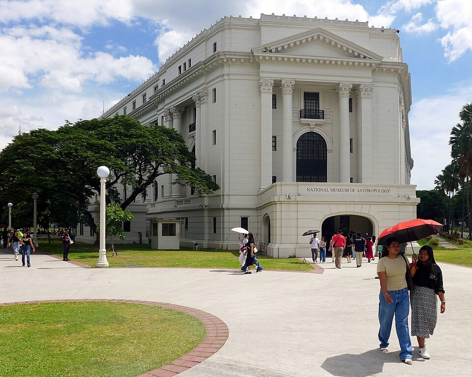
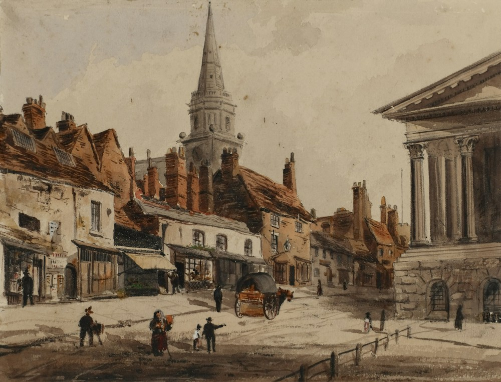
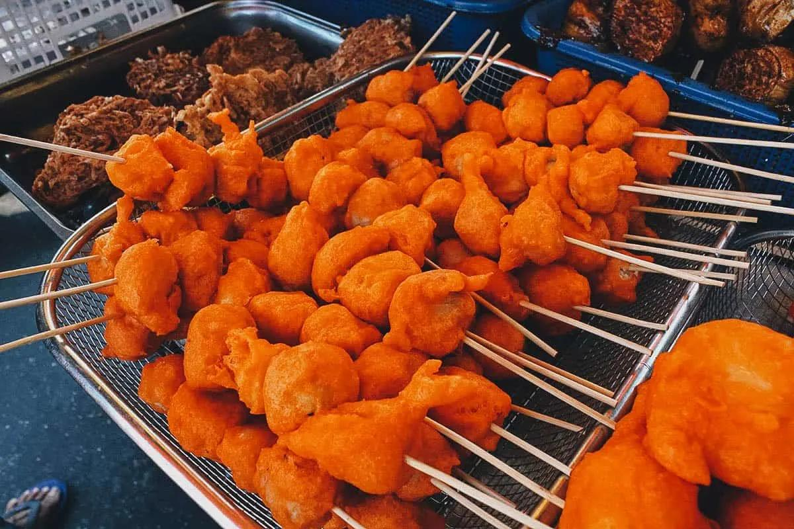

Make the most of every stop
Experiences to remember
Mix landmark walks, local culture, and delicious Filipino food into a trip that feels like your own.
Adventure

Walk around Manila Bay

Visit Rizal Park
Quiapo Church
Culture

Visit historical churches

Learn about Philippine history

National Museum of Fine Arts

Explore traditional Filipino art
Food

Pancit Palabok

Beef Pares
